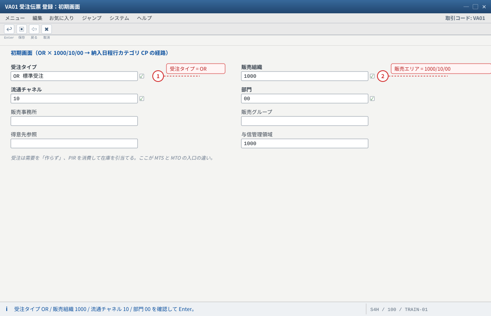
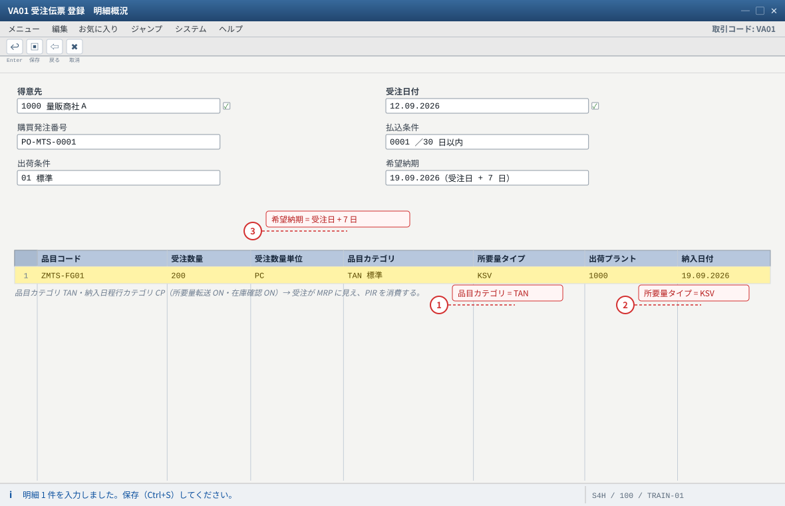
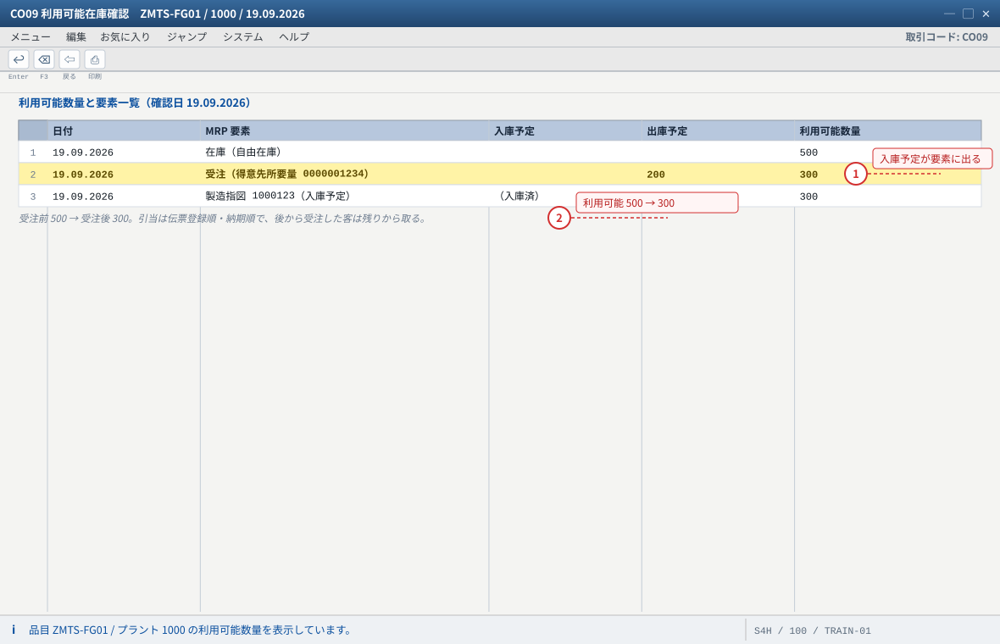
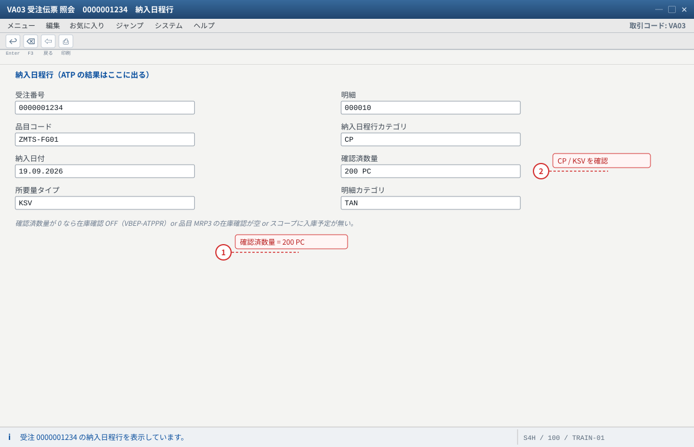
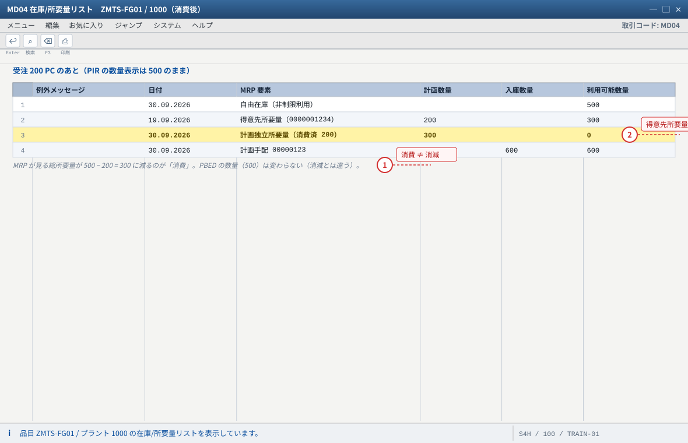
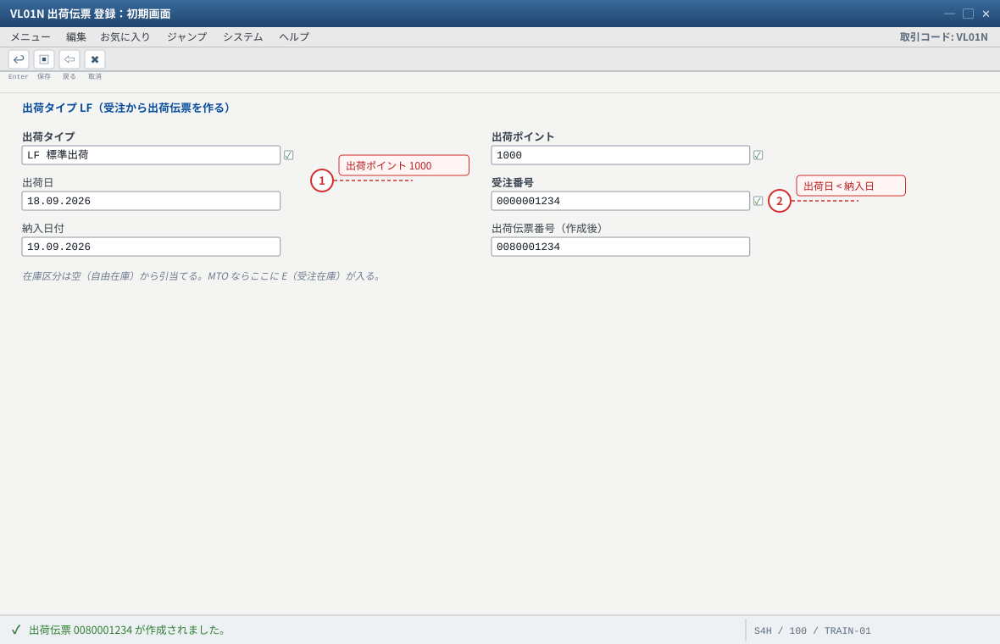
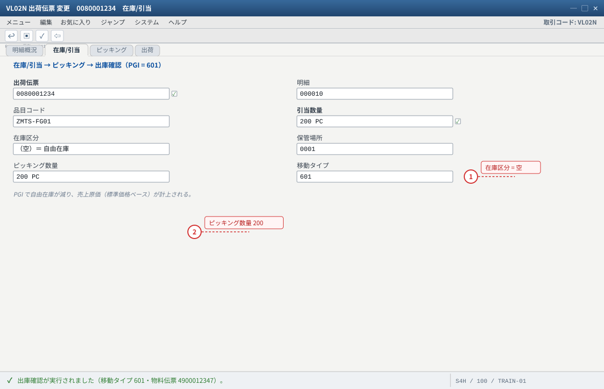
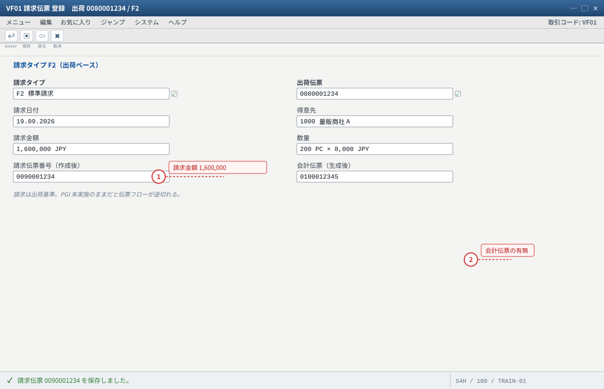
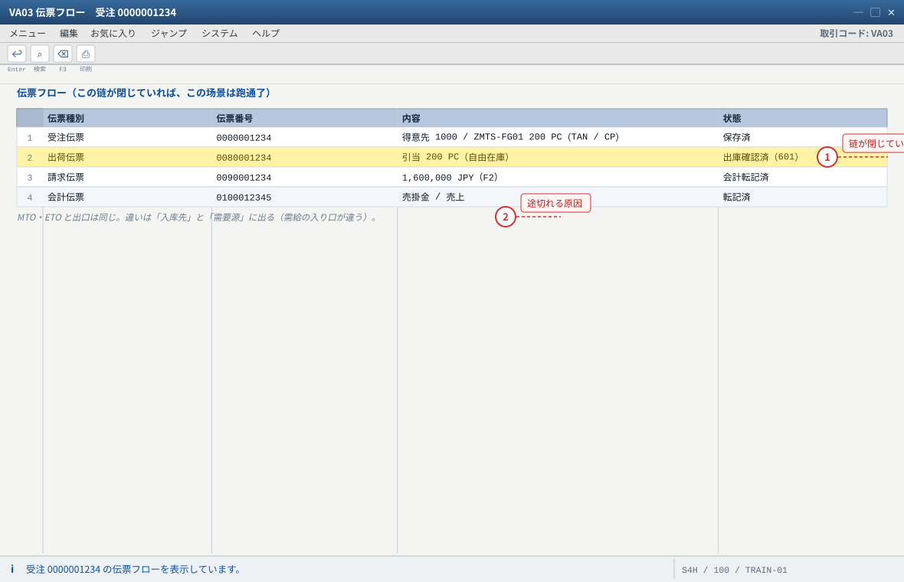

练习④ 受注・引当・出荷・請求（库存从「预测的」变成「卖掉的」）
.png 放进 assets/gui/ 后执行 python3 tools/swap_gui_images.py <site> --apply 即可一键替换。本练习是見込生産的「出口」：受注不创造需求，而是消费预测并抢占库存。做完你应该能在 MD04 里指出PIR 从 500 变成 300（消费 200），并说明这 200 PC 是被谁吃掉的。
200 PC
CO09 確認済
500 → 300
PGI 601
1,600,000 JPY
4-1 受注登録（VA01）
| 入力項目 | 値 | 説明 |
|---|---|---|
| 受注タイプ | OR（標準受注） | 納入日程行が CP（所要量転送 ON・在庫確認 ON）になる経路 |
| 販売エリア | 1000 / 10 / 00 | — |
| 得意先 / 出荷先 | 1000 / 1000 | 出荷先（船積先）が無いと出荷伝票が作れない |
| 品目 / 数量 | ZMTS-FG01 / 200 PC | ——本教材では在庫 500 に対して 200 を引当てる |
| 希望納期 | 受注日 + 7 日 | ATP はこの日付でチェックする |
| 単価（条件 PR00） | 8,000 JPY / PC（= 1,600,000 JPY） | 未設定なら受注時に警告（C5） |
VA01→ 受注タイプOR/ 販売エリア 1000/10/00 → 得意先1000、希望納期、品目ZMTS-FG01、数量200。- 明細の 明細カテゴリ =
TAN、納入日程行カテゴリ =CPを確認（C6〜C9 の答え合わせ）。 - 在庫確認の結果（確認済数量 / 確認日）を確認。足りなければ納入日程行が複数（分割）になる。
- 保存 → 受注番号を記録。
VA03で明細（カテゴリ・納入日程行）を再確認。
VA03 → 明細 → 明細カテゴリ TAN、納入日程行タブ → 納入日程行カテゴリ CP・確認済数量。② 表：
SE16N: VBAP（PSTYV = 明細カテゴリ）、SE16N: VBEP（ETTYP = 納入日程行カテゴリ / BEDSD 所要量転送 / ATPPR 在庫確認 / BDART 所要量タイプ / 確認済数量）。VOV4 に OR + 0001 の行が無い、或は品目カテゴリグループが空。② 納入日程行が
CN 等になった → VOV5 の割当と品目 MRPタイプの組合せを確認（C9）。③ 価格が 0 → 条件レコード（
PR00）の期限切れ/販売組織不一致。MD04 を比べる。受注後は「得意先所要量」行が現れ、PIR の行には「消費済」の数量が増える（行自体は消えない）——この 2 つの行の関係を説明できれば练习④ の前半は合格。
- 1 MTS の受注は標準の OR で始める（明細カテゴリは品目側の設定で TAN に決まる）
- 2 販売エリアが合っていないと条件レコード PR00（8,000 JPY）が効かない
自システムでの確認：明細カテゴリが TAN・納入日程行カテゴリが CP になるかは VA03 で確認します（C6〜C9 の答え合わせ）。

- 1 品目カテゴリは TAN。空だと「明細カテゴリを決定できません」で受注が保存できない
- 2 所要量タイプ KSV = 戦略 40 の得意先所要量。ここが空なら MRP に需要が立たない
- 3 希望納期は ATP のチェック日付。在庫 500 PC に対して 200 PC を引当てる
自システムでの確認：VA03 → 明細 → 明細カテゴリ（VBAP-PSTYV）/ 納入日程行（VBEP-ETTYP・BEDSD・ATPPR・BDART）。
4-2 在庫確認（ATP）の確認（CO09 / V_V2）
ATP 的结果不只是「能不能卖」，还包括「哪一个客户先拿到货」。MTS 的库存是公共的，所以引当顺序（伝票登録順・納期順）直接决定客户体验。
| 見るもの | T-code | 要点 |
|---|---|---|
| 利用可能数量と内訳 | CO09 | 品目 + プラント + 確認日。入庫予定（計画手配/指図）・出庫予定（受注）を要素として確認 |
| 集団在庫確認 | MDVP | 複数品目/プラントをまとめて（納期遅延の一次チェック） |
| 納期再設定・バックオーダー | V_V2 | 受注の納期を最新の在庫状況で引き直す（引当の再計算） |
- 受注を保存する前に
CO09で利用可能数量を記録（例：入庫予定 500 − 出庫予定 0 = 500）。 - 受注（200 PC）保存後に
CO09を再実行 → 出庫予定に受注が並び、利用可能数量が 300 になることを確認。 V_V2を実行して納期を再設定 → 確認済数量/日付の変化を見る。VA03→ 納入日程行の「確認済数量」が 200（不足なし）であることを確認。
CO09 の要素一覧（入庫予定 = 製造指図 / 計画手配、出庫予定 = 受注）。受注側の結果：
VA03 納入日程行の確認済数量、表は VBEP（確認済数量）与 VBBS（引当）。在庫確認のスコープ（何を見るか）は 配置 C13（
OVZ9 と品目 MRP3 のチェックルール）。② 在庫 500 あるのに欠品扱い → 在庫が別の保管場所/別の特在にある、或は引当優先の受注が既にある（
CO09 の出庫予定を見る）。③
V_V2 で納期が繰り下がる → 在庫不足の正当な結果。「在庫が足りない」を隠さないのが見込生産の運用。
- 1 入庫予定（製造指図・計画手配）が要素に並ぶか = C13 のスコープに「入庫予定」が入っている証拠
- 2 利用可能数量の内訳に「在庫 + 入庫予定 − 出庫予定」が効いていることを確認する
自システムでの確認：受注側の結果は VA03 → 納入日程行の確認済数量、表は VBEP / VBBS。バッチは MDVP、納期再設定は V_V2。

- 1 確認済数量 200 = 不足なし。分割納入になっていれば行が複数になる
- 2 納入日程行カテゴリ CP + 所要量タイプ KSV。VOV5 / VOV6 の答え合わせができる
自システムでの確認：V_V2 で納期再設定（引当の再計算）を実行し、確認済数量と日付の変化を見てください。
4-3 PIR の消費を MD04 で見る（見込生産の核心）
受注前の MD04（1 か月目） 計画独立所要量（PIR） 500 PC ───────────────────────── 利用可能数量 −500 PC（或は在庫 500 で 0） 受注 200 PC の後 計画独立所要量（PIR） 500 PC（消費済 200） ← 数量は 500 のまま！ 得意先所要量 200 PC ← 受注は別行で出る ───────────────────────── MRP が見る総所要量 300 PC（= 500 − 200） ここが「消費」：MD04 の表示上で PIR が食べられる。PBED の数量（500）は変わらない。
| 観点 | 消費（Consumption） | 消減（Reduction） |
|---|---|---|
| 何が変わる | MD04 上の「消費済数量」が増える。PBED は変わらない | PBED の数量そのものが減る |
| 起きる時 | 受注/出荷が PIR を食べる（戦略 40 など） | 入庫（101）・生産/購買の完結など（戦略 10/11 の経路） |
| 確認方法 | MD04 の PIR 行（消費済数量）、MD73 | SE16N: PBED-PLNMG の値そのもの |
MD04→ZMTS-FG01：PIR 行の「消費済数量 / 未消費数量」を読む。- PIR 行をダブルクリック → 消費の明細（どの納入日程行/受注が消費したか）を確認。
SE16N: PBEDを開き、PLNMGが減っていないことを確認（消費の証拠）。- 受注の数量を変える（例 200 → 100）と、消費量がどう動くかを確認。
MD04（消費済数量）と SE16N: PBED（数量不変）の 2 つを並べて見るのが最も確実。消費モード（MARC-VRMOD）と逆/順消費期間（VINT1/VINT2）を変えると消費のされ方が変わるので、MM03 MRP3 と併せて確認する。② 遠い未来の受注が当月の PIR を食べる → 逆/順消費期間の設定次第（
MARC-VINT1/VINT2）。期間外なら消費されない（＝別途 MRP に需求が立つ）。③ 戦略 10 の品目で消費を期待する → 戦略 10 は消費しない（SAP PRESS / SAP Help）。消減で処理される。
2（逆＋順）→ 3（順消費のみ）に変えて MD04 を比べる。どちらの PIR が消費されるかが変わることを確認する。（変えたら必ず元に戻す。）
- 1 PIR の行は消えない。消費済数量が増えるだけ（行をダブルクリックで消費明細が見える）
- 2 受注の行は別行で出る。需要は PIR と得意先所要量の 2 本に見えるが、MRP は消費済を差し引いて計算する
自システムでの確認：SE16N: PBED の PLNMG が減っていないこと（消費の証拠）。消費モードは MARC-VRMOD / VINT1 / VINT2。
4-4 出荷と PGI 601（VL01N / VL02N）
| 項目 | 値 | 説明 |
|---|---|---|
| 出荷タイプ | LF | 受注から納入表（VL10 系）或は VL01N で直接作成 |
| 出荷数量 / 在庫区分 | 200 PC / 空（自由在庫） | MTO なら E（受注在庫）が入る |
| 引当（ピッキング） | 引当数量 200 PC・バッチ/保管場所 | VL02N → 明細 → 在庫/引当 |
| PGI（出庫確認） | 移動タイプ 601 | 在庫が減り、売上原価（標準価格ベース）が計上される |
VL01N→ 出荷ポイント / 希望納期 / 受注番号 → 明細を確認 → 保存 → 出荷伝票番号を記録。VL02N→ 明細 → 「在庫/引当」タブで引当数量 200 PC・在庫区分 空（自由在庫）を確認。- ピッキング数量を入力（练习では出荷数量と同数）→ 保存。
- 「出庫確認（PGI）」を実行 → 移動タイプ
601の転記メッセージを確認。 MMBE/MB52で自由在庫が 500 → 300 に減ったことを確認。
VL03N → 明細 → 在庫/引当（引当数量・在庫区分）。② 在庫：
MMBE / MB52（自由在庫 300）。③ 物料伝票：
SE16N: MATDOC（移動タイプ 601、出荷伝票参照 VBELN）。④ 会計：
FB03（在庫勘定の貸方 / 売上原価の借方。勘定は OBYC: BSX・GBB）。VL03N の在庫/引当を見る。② 在庫区分が
E（受注在庫）になっている → 品目が MTO 化している（C2）。③ 引当が別の受注の在庫を取った → 自由在庫は登録順なので、先の受注が優先されるのが正常（
CO09 の出庫予定順）。④ PGI 後に在庫がマイナス → 過去データの不整合。見込生産ではマイナス在庫を作らない運用が原則。
VA03 → 伝票フローを見る。出荷伝票の状態（出荷済/PGI 済）と、在庫の増減、会計伝票の発生を 1 枚にまとめる。
- 1 出荷ポイントと出荷プラントが未設定だと出荷伝票が作れない（C0 / OVXD 系）
- 2 出荷日は納入日より前。PGI は出荷日で在庫を落とす
自システムでの確認：出荷タイプは 0VLP 系（IMG：ロジスティクス実行 > 出荷）で確認できます。

- 1 在庫区分が空 = 自由在庫からの引当て。ここが MTS（MTO なら E）
- 2 ピッキング数量が 0 だと PGI できない。引当不足なら在庫か別受注の先取りを疑う
自システムでの確認：VL03N → 明細 → 在庫/引当。MMBE で自由在庫 500 → 300、SE16N: MATDOC（601・出荷伝票参照）。
4-5 請求（VF01）と伝票フロー（VA03）
| 項目 | 値 | 説明 |
|---|---|---|
| 請求タイプ | F2（標準請求） | 出荷ベース（見込生産の標準） |
| 請求金額 | 1,600,000 JPY（税込は税区分次第） | 200 PC × 8,000 JPY |
| 会計伝票 | 売掛金 / 売上 | FB03 で確認（売上原価は PGI 側で計上済み） |
| 伝票フロー | 受注 → 出荷 → 請求 | VA03 → 環境 > 伝票フロー |
VF01→ 出荷伝票番号（或は納期/得意先で選択）→ 請求タイプF2→ 実行 → 請求伝票番号を記録。VF03で金額（200 × 8,000 = 1,600,000 JPY）と税を確認。FB03で請求の会計伝票（売掛金 / 売上）を確認。VA03→ 環境 > 伝票フロー：受注 → 出荷 → 請求 → 会計伝票が一直線につながっていることを確認（= この场景跑通了）。
VF03（金額・税）、FB03（会計伝票）、VA03 の伝票フロー。表なら
VBRK/VBRP（請求ヘッダ/明細）、VBFA（伝票フロー）。伝票フローが一本につながっていれば、SD の設定は少なくともこの経路では正しい。PR00）或は納入数量・ピッキング数量の違い。② 会計伝票が出ない → 会計期間未開、或は請求の転記が未実行。
③ 伝票フローが途切れる → PGI 未実施のまま請求しようとしている（請求は出荷基準なので出荷が前提）。

- 1 金額 0 のときは条件レコード PR00 の期限切れ / 販売組織不一致を疑う（C5）
- 2 会計伝票が出ないときは会計期間未開 or OBYC の勘定未設定
自システムでの確認：VF03（金額・税）、FB03（売掛金 / 売上）、表は VBRK / VBRP。コピー制御は VTFL（出荷 → 請求）。

- 1 4 本が一本につながっていれば、この経路の SD 設定は少なくとも正しい
- 2 フローが途切れるときは PGI 未実施 or VTFL のコピー制御不備を疑う
自システムでの確認：表は VBFA（伝票フロー）。PGI 前後で伝票フローを見比べると状態の変化が分かります。
期待结果汇总（本练习做完时的系统状态）
| # | 期待结果 | 確認方法 |
|---|---|---|
| 1 | 受注（OR/TAN/CP）が保存され、明細カテゴリ・納入日程行カテゴリが標準どおり | VA03・VBAP・VBEP |
| 2 | ATP で確認済数量 200 PC、CO09 の利用可能数量が 500 → 300 | CO09・VA03 |
| 3 | MD04 で PIR の消費済数量が 200、PBED の数量は 500 のまま | MD04・PBED |
| 4 | 出荷伝票の引当が自由在庫（在庫区分 空）から 200 PC | VL03N |
| 5 | PGI 601 で自由在庫 500 → 300 PC | MMBE・MATDOC |
| 6 | 請求 1,600,000 JPY、会計伝票（売掛金/売上）生成 | VF03・FB03 |
| 7 | 伝票フローが受注 → 出荷 → 請求 → 会計伝票で閉じている | VA03 → 伝票フロー |
つまずきと対処（本练习版）
| 症状 | 根因の候補 | 確認手順 |
|---|---|---|
| 受注が保存できない | VOV4 の割当なし / 品目カテゴリグループ空 | VOV4・MM03 販売組織2 |
| 受注が MD04 に出ない | 所要量転送 OFF（納入日程行カテゴリ） | VBEP-BEDSD・VOV6 |
| 確認済数量 0 | 在庫確認 OFF / 品目 MRP3 空 / スコープに在庫・入庫予定なし | VBEP-ATPPR・OVZ9・CO09 |
| PIR が消費されない | 戦略グループが 10/11 系、或は消費期間外 | MM03 MRP3・MD04 の消費明細 |
| 出荷で引当できない | 在庫不足（別の受注が先）/ 在庫区分が違う | CO09・VL03N の在庫/引当 |
| PGI ができない | ピッキング未入力 / 在庫マイナス防止 | VL02N のピッキング数量 |
| 請求額が 0 | 条件レコード無し・期限切れ | VF03・VK13 |
| 伝票フローが途切れる | PGI 未実施 / コピー制御（VTFL）不備 | VA03 伝票フロー・VTFL |
验收（完成基准）
VA01で受注 200 PC を登録し、明細カテゴリTAN・納入日程行カテゴリCPを確認した。CO09で利用可能数量が受注前後で 500 → 300 に変わることを確認した。MD04で PIR の消費済数量 200 を確認し、PBEDの数量が変わっていないことも確認した。- 消費と消減の違いを、自分の観察結果を例に説明できる。
VL01N/VL02Nで出荷・引当（在庫区分 空 = 自由在庫）・PGI 601 を完遂した。MMBEで自由在庫が 300 PC に減っていることを確認した。VF01で請求 1,600,000 JPY を作成し、FB03で会計伝票を確認した。VA03の伝票フローが 受注 → 出荷 → 請求 → 会計伝票 で閉じていることを確認した。
CP（所要量転送・在庫確認・移動タイプ 601）と VOV5 の決定キー（明細カテゴリ + MRPタイプ）：SAP Community Schedule line category CP / Link between MRP type and schedule line category。ATP の仕組み（利用可能在庫数量＝在庫＋入庫予定−出庫予定、
CO09）と品目 MRP3 の在庫確認：SAP Help Availability Check / Availability Check According to ATP Logic、tokulog ATP利用可能在庫確認について徹底解説！。PIR の消費（MD04 上で起き、
PBED は変わらない）：SAP Help（Support Content）Tables and programs of planned independent requirements 与 SAP Community PIR Consumption & Reduction。出荷・PGI 601・請求
F2：SAP Help（SD 出荷/請求）。Cloud の対応フローは スコープアイテム BJ5（引当・入出庫・ATP を含む）。